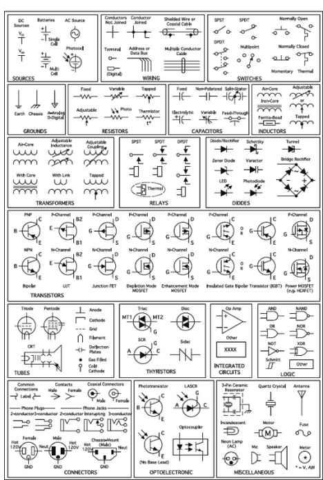
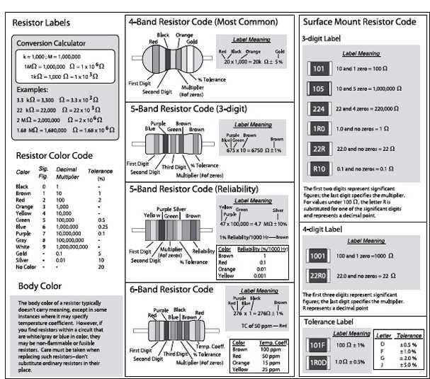
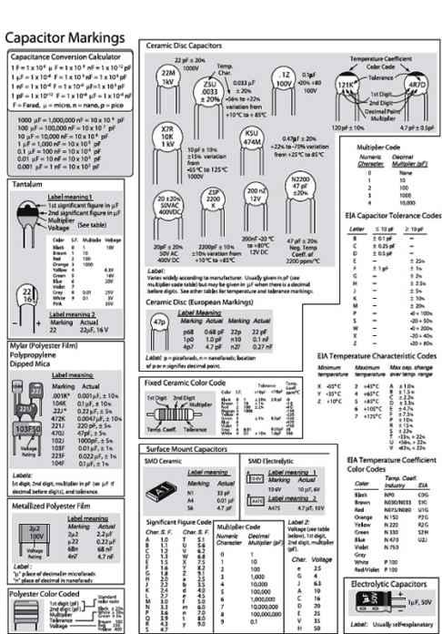
Practical Electronics for Inventors
Third Edition
ABOUT THE AUTHORS
Paul Scherz is a physicist/mechanical engineer who received his BS in Physics from the University of Wisconsin. His area of interest in physics focuses on elementary particle interactions. Paul is an inventor/hobbyist in electronics, an area he grew to appreciate through his experience at the University’s Department of Nuclear Engineering and Engineering Physics and the Department of Plasma Physics.
Dr. Simon Monk has a bachelor’s degree in Cybernetics and Computer Science and a PhD in Software Engineering. Simon spent several years as an academic before he returned to industry, cofounding the mobile software company Momote Ltd. Simon is now a full-time author and has published a number of books in the McGraw-Hill Evil Genius series, as well as books on programming the Arduino and Raspberry Pi. He has also published books on IOIO and .NET Gadgeteer.
ABOUT THE TECHNICAL EDITORS
Michael Margolis has more than 40 years of experience developing and delivering hardware and software solutions. He has worked at senior levels with Sony, Lucent/Bell Labs, and a number of start-up companies. Michael is the author of two books, Arduino Cookbook and Make an Arduino-Controlled Robot: Autonomous and Remote-Controlled Bots on Wheels.
Chris Fitzer is a solutions architect and technical manager, who received his PhD in Electrical and Electronic Engineering from the University of Manchester Institute of Science and Technology (UMIST) in 2003 and a first class honors degree (BSc) in 1999. Chris currently leads a global team, developing and deploying Smart Grid technologies around the world. Previous positions have seen him drive the European interests of the ZigBee Smart Energy (ZSE) profile and lead the development of the world’s first certified Smart Energy In Premise Display (IPD) and prototype smart meter. He has also authored or co-authored numerous technical journal papers within the field of Smarter Grids.
Practical Electronics for Inventors
Third Edition
Paul Scherz
Simon Monk
New York Chicago San Francisco Lisbon
London Madrid Mexico City Milan New Delhi
San Juan Seoul Singapore Sydney Toronto
Copyright © 2013 by The McGraw-Hill Companies. All rights reserved. Except as permitted under the United States Copyright Act of 1976, no part of this publication may be reproduced or distributed in any form or by any means, or stored in a database or retrieval system, without the prior written permission of the publisher.
ISBN: 978-0-07-177134-4
MHID: 0-07-177134-4
The material in this eBook also appears in the print version of this title: ISBN: 978-0-07-177133-7,
MHID: 0-07-177133-6.
McGraw-Hill eBooks are available at special quantity discounts to use as premiums and sales promotions, or for use in corporate training programs. To contact a representative please e-mail us at bulksales@mcgraw-hill.com.
All trademarks are trademarks of their respective owners. Rather than put a trademark symbol after every occurrence of a trademarked name, we use names in an editorial fashion only, and to the benefit of the trademark owner, with no intention of infringement of the trademark. Where such designations appear in this book, they have been printed with initial caps.
Information has been obtained by McGraw-Hill from sources believed to be reliable. However, because of the possibility of human or mechanical error by our sources, McGraw-Hill, or others, McGraw-Hill does not guarantee the accuracy, adequacy, or completeness of any information and is not responsible for any errors or omissions or the results obtained from the use of such information.
TERMS OF USE
This is a copyrighted work and The McGraw-Hill Companies, Inc. (“McGrawHill”) and its licensors reserve all rights in and to the work. Use of this work is subject to these terms. Except as permitted under the Copyright Act of 1976 and the right to store and retrieve one copy of the work, you may not decompile, disassemble, reverse engineer, reproduce, modify, create derivative works based upon, transmit, distribute, disseminate, sell, publish or sublicense the work or any part of it without McGraw-Hill’s prior consent. You may use the work for your own noncommercial and personal use; any other use of the work is strictly prohibited. Your right to use the work may be terminated if you fail to comply with these terms.
THE WORK IS PROVIDED “AS IS.” McGRAW-HILL AND ITS LICENSORS MAKE NO GUARANTEES OR WARRANTIES AS TO THE ACCURACY, ADEQUACY OR COMPLETENESS OF OR RESULTS TO BE OBTAINED FROM USING THE WORK, INCLUDING ANY INFORMATION THAT CAN BE ACCESSED THROUGH THE WORK VIA HYPERLINK OR OTHERWISE, AND EXPRESSLY DISCLAIM ANY WARRANTY, EXPRESS OR IMPLIED, INCLUDING BUT NOT LIMITED TO IMPLIED WARRANTIES OF MERCHANTABILITY OR FITNESS FOR A PARTICULAR PURPOSE. McGraw-Hill and its licensors do not warrant or guarantee that the functions contained in the work will meet your requirements or that its operation will be uninterrupted or error free. Neither McGraw-Hill nor its licensors shall be liable to you or anyone else for any inaccuracy, error or omission, regardless of cause, in the work or for any damages resulting therefrom. McGraw-Hill has no responsibility for the content of any information accessed through the work. Under no circumstances shall McGraw-Hill and/or its licensors be liable for any indirect, incidental, special, punitive, consequential or similar damages that result from the use of or inability to use the work, even if any of them has been advised of the possibility of such damages. This limitation of liability shall apply to any claim or cause whatsoever whether such claim or cause arises in contract, tort or otherwise.

CONTENTS
PREFACE
Inventors in the field of electronics are individuals who possess the knowledge, intuition, creativity, and technical know-how to turn their ideas into real-life electrical gadgets. It is my hope that this book will provide you with an intuitive understanding of the theoretical and practical aspects of electronics in a way that fuels your creativity.
This book is designed to help beginning inventors invent. It assumes little to no prior knowledge of electronics. Therefore, educators, students, and aspiring hobbyists will find this book a good initial text. At the same time, technicians and more advanced hobbyists may find this book a useful resource.
Notes About the Third Edition
The third edition of Practical Electronics for Inventors includes the following new chapters:
• Chapter 6, “Sensors,” covers a wide range of discrete and IC sensors, such as temperature sensors, accelerometers, rotary encoders, and Geiger–Müller tubes.
• Chapter 13, “Microcontrollers,” includes in-depth details of Atmel and Microchip microcontrollers, as well as the popular Arduino and BASIC Stamp prototyping platforms. There is also a comprehensive section on interfacing with microcontrollers and serial communications, including I2C, SPI, and 1-Wire.
• Chapter 16, “Modular Electronics,” covers the wide range of prebuilt electronic modules as useful prototyping tools. This chapter lists some of the most useful modules available, and also provides details of useful special-purpose ICs and an introduction to the plug-together approach of .NET Gadgeteer.
Throughout the book, there have been numerous changes, bringing the material up to date and including new topics such as GPS modules, digital amplification, LED Charlieplexing, and introductions to the use of modern software tools like EAGLE PCB Design and CircuitLab’s online simulation software.
ACKNOWLEDGMENTS
We would like to thank the many people who have helped in the production of this book. Special thanks are due to the technical reviewers Michael Margolis, Chris Fitzer, and David Buckley.
We have been able to greatly improve the accuracy of the book thanks to the very detailed and helpful errata from the second edition that was collated by Martin Ligare at Bucknell University. Contributors to this errata were Steve Baker (Naval Postgraduate School), George Caplan (Wellesley College), Robert Drehmel, Earl Morris, Robert Strzelczyk (Motorola), Lloyd Lowe (Boise State University), John Kelty (University of Nebraska), Perry Spring (Cascadia Community College), Michael B. Allen, Jeffrey Audia, and Ken Ballinger (EIT). Thank you all for taking the time to make this a better book.
Many thanks to Roger Stewart, Patty Mon, and everyone from McGraw-Hill, for their support and skill in converting this manuscript into a great book.
—Paul Scherz and Simon Monk
Introduction to Electronics
Perhaps the most common predicament newcomers face when learning electronics is figuring out exactly what it is they must learn. What topics are worth covering, and in which general order should they be covered? A good starting point for answering these questions is the flowchart presented in Fig. 1.1. This chart provides an overview of the basic elements that go into designing practical electrical gadgets and represents the information you will find in this book. This chapter introduces these basic elements.
FIGURE 1.1
At the top of the chart comes the theory. This involves learning about voltage, current, resistance, capacitance, inductance, and various laws and theorems that help predict the size and direction of voltages and currents within circuits. As you learn the basic theory, you will be introduced to basic passive components such as resistors, capacitors, inductors, and transformers.
Next down the line are discrete passive circuits. Discrete passive circuits include current-limiting networks, voltage dividers, filter circuits, attenuators, and so on. These simple circuits, by themselves, are not very interesting, but they are vital ingredients in more complex circuits.
After you have learned about passive components and circuits, you move on to discrete active devices, which are built from semiconductor materials. These devices consist mainly of diodes (one-way current-flow gates) and transistors (electrically controlled switches/amplifiers).
Once you have covered the discrete active devices, you get to discrete active/passive circuits. Some of these circuits include rectifiers (ac-to-dc converters), amplifiers, oscillators, modulators, mixers, and voltage regulators. This is where things start getting interesting.
Throughout your study of electronics, you will learn about various input/output (I/O) devices (transducers). Input devices (sensors) convert physical signals, such as sound, light, and pressure, into electrical signals that circuits can use. These devices include microphones, phototransistors, switches, keyboards, thermistors, strain gauges, generators, and antennas. Output devices convert electrical signals into physical signals. Output devices include lamps, LED and LCD displays, speakers, buzzers, motors (dc, servo, and stepper), solenoids, and antennas. These I/O devices allow humans and circuits to communicate with one another.
To make things easier on the circuit designer, manufacturers have created integrated circuits (ICs), which contain discrete circuits (like the ones mentioned in the previous paragraph) that are crammed onto a tiny chip of silicon. The chip is usually housed within a plastic package, where little internal wires link the chip to external metal terminals. ICs such as amplifiers and voltage regulators are referred to as analog devices, which means that they respond to and produce signals of varying degrees of voltage. (This is unlike digital ICs, which work with only two voltage levels.) Becoming familiar with ICs is a necessity for any practical circuit designer.
Digital electronics comes next. Digital circuits work with only two voltage states: high (such as 5 V) or low (such as 0 V). The reason for having only two voltage states has to do with the ease of processing data (numbers, symbols, and control information) and storage. The process of encoding information into signals that digital circuits can use involves combining bits (1s and 0s, equivalent to high and low voltages) into discrete-meaning “words.” The designer dictates what these words will mean to a specific circuit. Unlike analog electronics, digital electronics uses a whole new set of components, which at the heart are all integrated in form.
A huge number of specialized ICs are used in digital electronics. Some of these ICs are designed to perform logical operations on input information; others are designed to count; while still others are designed to store information that can be retrieved later on. Digital ICs include logic gates, flip-flops, shift registers, counters, memories, processors, and so on. Digital circuits are what give electrical gadgets “brains.” In order for digital circuits to interact with analog circuits, special analog-to-digital (A/D) conversion circuits are needed to convert analog signals into strings of 1s and 0s. Likewise, digital-to-analog conversion circuits are used to convert strings of 1s and 0s into analog signals.
With an understanding of the principals behind digital electronics, we are free to explore the world of microcontrollers. These are programmable digital electronics that can read values from sensors and control output devices using the I/O pins, all on a single IC controlled by a little program.
And mixed in among all this is the practical side of electronics. This involves learning to read schematic diagrams, constructing circuit prototypes using breadboards, testing prototypes (using multimeters, oscilloscopes, and logic probes), revising prototypes (if needed), and constructing final circuits using various tools and special circuit boards.
In the next chapter, we will start at the beginning by looking at the theory of electronics.
Theory
2.1 Theory of Electronics

This chapter covers the basic concepts of electronics, such as current, voltage, resistance, electrical power, capacitance, and inductance. After going through these concepts, this chapter illustrates how to mathematically model currents and voltage through and across basic electrical elements such as resistors, capacitors, and inductors. By using some fundamental laws and theorems, such as Ohm’s law, Kirchhoff’s laws, and Thevenin’s theorem, the chapter presents methods for analyzing complex networks containing resistors, capacitors, and inductors that are driven by a power source. The kinds of power sources used to drive these networks, as we will see, include direct current (dc) sources, alternating current (ac) sources (including sinusoidal and nonsinusoidal periodic sources), and nonsinusoidal nonperiodic sources. We will also discuss transient circuits, where sudden changes in state (such as flipping a switch within a circuit) are encountered. At the end of the chapter, the approach needed to analyze circuits that contain nonlinear elements (diodes, transistors, integrated circuits, etc.) is discussed.
I recommend using a circuit simulator program if you’re just starting out in electronics. The web-based simulator CircuitLab (www.circuitlab.com) is extremely easy to use and has a nice graphical interface. There are also online calculators that can help you with many of the calculations in this chapter. Using a simulator program as you go through this chapter will help crystallize your knowledge, while providing an intuitive understanding of circuit behavior. Be careful—simulators can lie, or at least they can appear to lie when you don’t understand all the necessary parameters the simulator needs to make a realistic simulation. It is always important to get your hands dirty—get out the breadboards, wires, resistors, power supplies, and so on, and construct. It is during this stage that you gain the greatest practical knowledge that is necessary for an inventor.
It is important to realize that components mentioned in this chapter are only “theoretically” explained. For example, in regard to capacitors, you’ll learn how a capacitor works, what characteristic equations are used to describe a capacitor under certain conditions, and various other basic tricks related to predicting basic behavior. To get important practical insight into capacitors, however, such as real-life capacitor applications (filtering, snubbing, oscillator design, etc.), what type of real capacitors exist, how these real capacitors differ in terms of nonideal characteristics, which capacitors work best for a particular application, and, more important, how to read a capacitor label, requires that you jump to Chap. 3, Section 3.6, which is dedicated to these issues. This applies to other components mentioned in this theory portion of the book.
The theoretical and practical information regarding transformers and nonlinear devices, such as diodes, transistors, and analog and digital integrated circuits (ICs), is not treated within this chapter. Transformers are discussed in full in Chap. 3, Section 3.8, while the various nonlinear devices are treated separately in the remaining chapters of this book.
A word of advice: if the math in a particular section of this chapter starts looking scary, don’t worry. As it turns out, most of the nasty math in this chapter is used to prove, say, a theorem or law or to give you an idea of how hard things can get if you do not use some mathematical tricks. The actual amount of math you will need to know to design most circuits is surprisingly small; in fact, basic algebra may be all you need to know. Therefore, when the math in a particular section in this chapter starts looking ugly, skim through the section until you locate the useful, nonugly formulas, rules, and so on, that do not have weird mathematical expressions in them. You don’t have to be a mathematical whiz to be able to design decent circuits.
2.2 Electric Current
Electric current is the total charge that passes through some cross-sectional area A per unit time. This cross-sectional area could represent a disk placed in a gas, plasma, or liquid, but in electronics, this cross-sectional area is most frequently a slice through a solid material, such as a conductor.
If ΔQ is the amount of charge passing through an area in a time interval Δt, then the average current Iave is defined as:
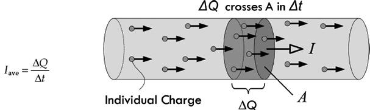
FIGURE 2.1
If the current changes with time, we define the instantaneous current I by taking the limit as Δt → 0, so that the current is the instantaneous rate at which charge passes through an area:
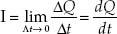
(2.1)
The unit of current is coulombs per second, but this unit is also called the ampere (A), named after Andre-Marie Ampere:
1 A = 1 C/s
To sound less nerdy, the term amp can be used in place of ampere. Because the ampere is a rather large unit, current is also expressed in milliamps (1 mA = 1 × 10−3 A), microamps (1 μA = 1 × 10−6 A), and nanoamps (1 nA = 1 × 10−9 A).
Within conductors such as copper, electrical current is made up of free electrons moving through a lattice of copper ions. Copper has one free electron per copper atom. The charge on a single electron is given by:
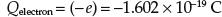
(2.2.a)
This is equal to, but opposite in sign of, the charge of a single copper ion. (The positive charge is a result of the atom donating one electron to the “sea” of free electrons randomly moving about the lattice. The loss of the electron means there is one more proton per atom than electrons.) The charge of a proton is:
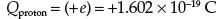
(2.2.b)
The conductor, as a whole, is neutral, since there are equal numbers of electrons and protons. Using Eq. 2.2, we see that if a current of 1 A flows through a copper wire, the number of electrons flowing by a cross section of the wire in 1 s is equal to:
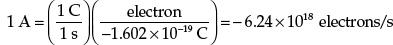
Now, there is a problem! How do we get a negative number of electrons flowing per second, as our result indicates? The only two possibilities for this would be to say that either electrons must be flowing in the opposite direction as the defined current, or positive charges must be moving in our wire instead of electrons to account for the sign. The last choice is an incorrect one, since experimental evidence exists to prove electrons are free to move, not positive charges, which are fixed in the lattice network of the conductor. (Note, however, there are media in which positive charge flow is possible, such as positive ion flow in liquids, gases, and plasmas.) It turns out that the first choice—namely, electrons flowing in the opposite direction as the defined current flow—is the correct answer.
Long ago, when Benjamin Franklin (often considered the father of electronics) was doing his pioneering work in early electronics, he had a convention of assigning positive charge signs to the mysterious (at that time) things that were moving and doing work. Sometime later, a physicist by the name of Joseph Thomson performed an experiment that isolated the mysterious moving charges. However, to measure and record his experiments, as well as to do his calculations, Thomson had to stick with using the only laws available to him—those formulated using Franklin’s positive currents. But these moving charges that Thomson found (which he called electrons) were moving in the opposite direction of the conventional current I used in the equations, or moving against convention. See Fig. 2.2.
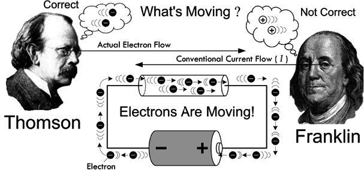
FIGURE 2.2 Thomson changed the notion that positive charges were what were moving in conductors, contrary to Franklin’s notion. However, negative electrons going one way is equivalent to positive charges going the opposite direction, so the old formulas still work. Since you deal with the old formulas, it’s practical to adopt Franklin’s conventional current—though realize that what’s actually moving in conductors is electrons.
What does this mean to us, to those of us not so interested in the detailed physics and such? Well, not too much. We could pretend that there were positive charges moving in the wires and various electrical devices, and everything would work out fine: negative electrons going one way are equivalent to positive charges going in the opposite direction. In fact, all the formulas used in electronics, such as Ohm’s law (V = IR), “pretend” that the current I is made up of positive charge carriers. We will always be stuck with this convention. In a nutshell, it’s convenient to pretend that positive charges are moving. So when you see the term electron flow, make sure you realize that the conventional current flow I is moving in the opposite direction. In a minute, we’ll discuss the microscopic goings-on within a conductor that will clarify things a bit better.
Example 1: How many electrons pass a given point in 3 s if a conductor is carrying a 2-A current?
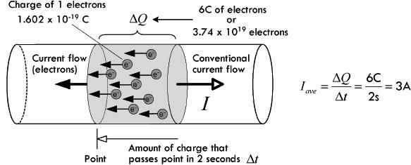
FIGURE 2.3
Answer: The charge that passes a given point in 3 s is:
ΔQ = I × Δt = (2 A)(3 s) = 6 C
One electron has a charge of 1.6 × 10-19 C, so 6 C worth of electrons is:
# Electrons = 6 C/1.602 × 10-19 C = 3.74 × 1019
Example 2: Charge is changing in a circuit with time according to Q(t) = (0.001 C) sin [(1000/s) t]. Calculate the instantaneous current flow.
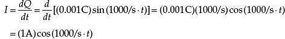
Answer: If we plug in a specific time within this equation, we get an instantaneous current for that time. For example, if t = 1, the current would be 0.174 A. At t = 3 s, the current would be − 0.5 A, the negative sign indicating that the current is in the opposite direction—a result of the sinusoidal nature.
Note: The last example involved using calculus—you can read about the basics of calculus in App. C if you’re unfamiliar with it. Fortunately, as we’ll see, rarely do you actually need to work in units of charge when doing electronics. Usually you worry only about current, which can be directly measured using an ammeter, or calculated by applying formulas that usually require no calculus whatsoever.
2.2.1 Currents in Perspective
What’s considered a lot or a little amount of current? It’s a good idea to have a gauge of comparison when you start tinkering with electronic devices. Here are some examples: a 100-W lightbulb draws about 1 A; a microwave draws 8 to 13 A; a laptop computer, 2 to 3 A; an electric fan, 1 A; a television, 1 to 3 A; a toaster, 7 to 10 A; a fluorescent light, 1 to 2 A; a radio/stereo, 1 to 4 A; a typical LED, 20 mA; a mobile (smart) phone accessing the web uses around 200 mA; an advanced low-power microchip (individual), a few μA to perhaps even several pA; an automobile starter, around 200 A; a lightning strike, around 1000 A; a sufficient amount of current to induce cardiac/respiratory arrest, around 100 mA to 1 A.
2.3 Voltage
To get electrical current to flow from one point to another, a voltage must exist between the two points. A voltage placed across a conductor gives rise to an electromotive force (EMF) that is responsible for giving all free electrons within the conductor a push.
As a technical note, before we begin, voltage is also referred to as a potential difference or just potential—they all mean the same thing. I’ll avoid using these terms, however, because it is easy to confuse them with the term potential energy, which is not the same thing.
A simple flashlight circuit, consisting of a battery connected to a lamp, through two conductors and a switch, is shown in Fig. 2.4. When the switch is open (“off”), no current will flow. The moment the switch is closed, however, the resistance of the switch falls to almost zero, and current will flow. This voltage then drives all free electrons, everywhere within the circuit, in a direction that points from negative to positive; conventional current flow, of course, points in the opposite direction (see Benjamin Franklin).
FIGURE 2.4
It is important to note that the battery needs the rest of the circuit, just as the rest of the circuit needs the battery. Without the linkage between its terminals, the chemical reactions within the battery cannot be carried out. These chemical reactions involve the transfer of electrons, which by intended design can only occur through a link between the battery’s terminals (e.g., where the circuit goes). Figure 2.5 shows this process using an alkaline dry cell battery. Notice that the flow of current is conserved through the circuit, even though the nature of the current throughout the circuit varies—ionic current within sections of the battery, electron current elsewhere.
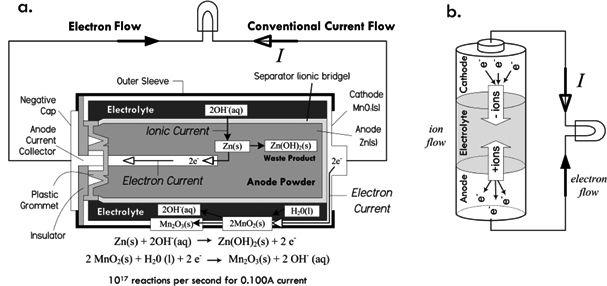
FIGURE 2.5
As free electrons within the lamp filament experience an EMF due to the applied voltage, the extra energy they gain is transferred to the filament lattice atoms, which result in heat (filament atomic vibrations) and emitted light (when a valence electron of a lattice atom is excited by a free electron and the bound electron returns to a lower energy configuration, thus releasing a photon).
A device that maintains a constant voltage across it terminals is called a direct current voltage source (or dc voltage source). A battery is an example of a dc voltage source. The schematic symbol for a battery is 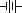.
2.3.1 The Mechanisms of Voltage
To get a mental image of how a battery generates an EMF through a circuit, we envision that chemical reactions inside yield free electrons that quickly build in number within the negative terminal region (anode material), causing an electron concentration. This concentration is full of repulsive force (electrons repel) that can be viewed as a kind of “electrical pressure.” With a load (e.g., our flashlight lamp, conductors, switch) placed between the battery’s terminals, electrons from the battery’s negative terminal attempt to alleviate this pressure by dispersing into the circuit. These electrons increase the concentration of free electrons within the end of the conductor attached to the negative terminal. Even a small percentage difference in free electron concentration in one region gives rise to great repulsive forces between free electrons. The repulsive force is expressed as a seemingly instantaneous (close to the speed of light) pulse that travels throughout the circuit. Those free electrons nearest to the pumped-in electrons are quickly repulsed in the opposite direction; the next neighboring electrons get shoved, and so on down the line, causing a chain reaction, or pulse. This pulse travels down the conductor near the speed of light. See Fig. 2.6.
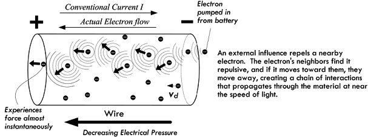
FIGURE 2.6
The actual physical movement of electrons is, on average, much slower. In fact, the drift velocity (average net velocity of electrons toward the positive terminal) is usually fractions of a millimeter per second—say, 0.002 mm/s for a 0.1-A current through a 12-gauge wire. We associate this drift movement of free electrons with current flow or, more precisely, conventional current flow I moving in the opposite direction. (As it turns out, the actual motion of electrons is quite complex, involving thermal effects, too—we’ll go over this in the next section.)
It is likely that those electrons farther “down in” the circuit will not feel the same level of repulsive force, since there may be quite a bit of material in the way which absorbs some of the repulsive energy flow emanating from the negative terminal (absorbing via electron-electron collisions, free electron–bond electron interactions, etc.). And, as you probably know, circuits can contain large numbers of components, some of which are buried deep within a complex network of pathways. It is possible to imagine that through some of these pathways the repulsive effects are reduced to a weak nudge. We associate these regions of “weak nudge” with regions of low “electrical pressure,” or voltage. Electrons in these regions have little potential to do work—they have low potential energy relative to those closer to the source of pumped-in electrons.
Voltage represents the difference in potential energy a unit charge has being at one location relative to another within a region of “electrical pressure”—the pressure attributed to new free electrons being pumped into the system. The relationship between the voltage and the difference in potential energy is expressed as:
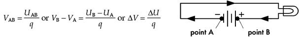
FIGURE 2.7

Implicit in the definition of voltage is the notion that voltage is always a measurement between two points, say point A and point B. That is the reason for the subscript “AB” in VAB. The symbol ΔV means the same. Both infer that there is an absolute scale on which to measure and give individual points a specific voltage value. In electronics, we can create such a scale by picking a point, often the point where there is the lowest electrical pressure, and defining this point as the zero point, or 0-V reference. In many dc circuits, people choose the negative terminal of the battery as the 0-V reference, and let everyone know by inserting a ground symbol 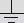 (more on this later). In practice, you rarely see voltages expressed using subscripts (VAB) or deltas (ΔV), but instead you simply see the symbol V, or you may see a symbol like VR. The “blank symbol” V, however, is always modified with a phrase stating the two points across which the voltage is present. In the second case, VR, the subscript means that the voltage is measured across the component R—in this case, a resistor. In light of this, we can write a cleaner expression for the voltage/potential energy expression:
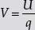
Just make sure you remember that the voltage and potential energy variables represent the difference in relation to two points. As we’ll discover, all the big electronics laws usually assume that variables of voltage or energy are of this “clean form.”
In our flashlight example, we can calculate the difference in potential energy between an electron emanating from the negative terminal of the 1.5-V battery and one entering the positive terminal.
ΔU = ΔVq = (1.5 V)(1.602 × 10−19 C) = 2.4 × 10−19 J
Notice that this result gives us the potential energy difference between the two electrons, not the actual potential energy of either the electron emanating from the negative terminal (U1) or the electron entering the positive terminal (U0). However, if we make the assumption that the electron entering the positive terminal is at zero potential energy, we can figure that the electron emanating from the negative terminal has a relative potential energy of:
U1 = ΔU + U0 = ΔU + 0 = 2.4 × 10−19 J
Note: Increasing positive potential energy can be associated with similar charges getting closer together. Decreasing energy can be associated with similar charges getting farther apart. We avoided the use of a negative sign in front of the charge of the electron, because voltages are defined by a positive test charge. We are in a pickle similar to the one we saw with Benjamin Franklin’s positive charges. As long as we treat the potential relative to the pumped-in electron concentration, things work out.
In a real circuit, where the number of electrons pumped out by the battery will be quite large—hundreds to thousands of trillions of electrons, depending on the resistance to electron flow—we must multiply our previous calculation by the total number of entering electrons. For example, if our flashlight draws 0.1 A, there will be 6.24 × 1017 electrons pumped into it by the battery per second, so you calculate the potential energy of all the new electrons together to be about 0.15 J/s.
What about the potential energies of free electrons at other locations throughout the circuit, such as those found in the lamp filament, those in the positive wire, those in the negative wire, and so on? We can say that somewhere in the filament of the lamp, there is an electron that has half the potential energy of a fresh pumped-in electron emanating from the negative terminal of the battery. We attribute this lower energy to the fact that other free electrons up the line have lost energy due to collision mechanisms, which in turn yields a weaker electrical repulsive pressure (shoving action) that our electron in question experiences. In fact, in our flashlight circuit, we attribute all loss in electrical pressure to be through the lamp filament as free-electron energy is converted into heat and light.
In regard to potential energies of free electrons within the conductors leading to and from the battery, we assume all electrons within the same conductor have the same potential energy. This assumes that there is no voltage difference between points in the same conductor. For example, if you take a voltmeter and place it between any two points of a single conductor, it will measure 0 V. (See Fig. 2.8.) For practical purposes, we accept this as true. However, in reality it isn’t. There is a slight voltage drop through a conductor, and if we had a voltmeter that was extremely accurate we might measure a voltage drop of 0.00001 V or so, depending on the length of the conductor, current flow, and conductor material type. This is attributed to internal resistance within conductors—a topic we’ll cover in a moment.
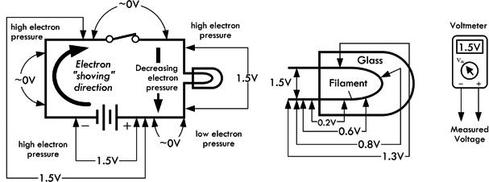
FIGURE 2.8
2.3.2 Definition of Volt and Generalized Power Law
We come now to a formal definition of the volt—the unit of measure of voltage. Using the relationship between voltage and potential energy difference V = U/q, we define a volt to be:
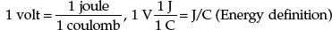
(Be aware that the use of “V” for both an algebraic quantity and a unit of voltage is a potential source of confusion in an expression like V = 1.5 V. The algebraic quantity is in italic.)
Two points with a voltage of 1 V between them have enough “pressure” to perform 1 J worth of work while moving 1 C worth of charge between the points. For example, an ideal 1.5-V battery is capable of moving 1 C of charge through a circuit while performing 1.5 J worth of work.
Another way to define a volt is in terms of power, which happens to be more useful in electronics. Power represents how much energy per second goes into powering a circuit. According to the conservation of energy, we can say the power used to drive a circuit must equal the power used by the circuit to do useful work plus the power wasted, as in the case of heat. Assuming that a single electron loses all its potential energy from going through a circuit from negative to positive terminal, we say, for the sake of argument, that all this energy must have been converted to work—useful and wasted (heat). By definition, power is mathematically expressed as dW/dt. If we substitute the potential energy expression U = Vq for W, assuming the voltage is constant (e.g., battery voltage), we get the following:
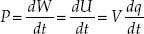
Since we know that current I = dq/dt, we can substitute this into the preceding expression to get:
(2.3)
This is referred to as the generalized power law. This law is incredibly powerful, and it provides a general result, one that is independent of type of material and of the nature of the charge movement. The unit of this electrical power is watts (W), with 1 W = 1 J/s, or in terms of volts and amps, 1 W = 1 VA.
In terms of power, then, the volt is defined as:
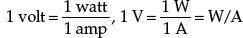
The generalized power law can be used to determine the power loss of any circuit, given only the voltage applied across it and the current drawn, both of which can easily be measured using a voltmeter and an ammeter. However, it doesn’t tell you specifically how this power is used up—more on this when we get to resistance. See Fig. 2.9.
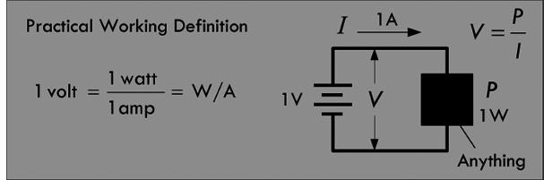
FIGURE 2.9
Example 1: Our 1.5-V flashlight circuit draws 0.1 A. How much power does the circuit consume?
Answer:
P = VI = (1.5 V)(0.1 A) = 0.15 W
Example 2: A 12-V electrical device is specified as consuming 100 W of power. How much current does it draw?
Answer:
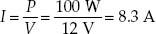
2.3.3 Combining Batteries
To get a larger voltage capable of supplying more power, we can place two batteries in series (end to end), as shown in Fig. 2.10. The voltage across the combination is equal to the individual battery voltages added together. In essence, we have placed two charge pumps in series, increasing the effective electrical pressure. Chemically speaking, if the batteries are of the same voltage, we double the number of chemical reactions, doubling the number of electrons that can be pumped out into the circuit.
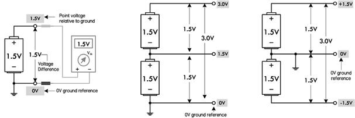
FIGURE 2.10
In Fig. 2.10, we use the notion of a ground reference, or 0-V reference, symbolized 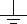. Though this symbol is used to represent an earth ground (which we define a bit later), it can also be used to indicate the point where all voltage measurements are to be referenced within a circuit. Logically, whenever you create a scale of measure, you pick the lowest point in the scale to be zero—0 V here. For most dc circuits, the ground reference point is usually placed at the negative terminal of the voltage source. With the notion of ground reference point, we also get the notion of a point voltage, which is the voltage measured between the ground reference and a specific point of interest within the circuit. For example, the single battery shown in Fig. 2.10 has a voltage of 1.5 V. We place a ground reference at the negative terminal and give this a 0-V point voltage, and place a 1.5-V point voltage marker at the positive terminal.
In the center of Fig. 2.10, we have two 1.5-V batteries in series, giving a combined voltage of 3.0 V. A ground placed at the negative terminal of the lower battery gives us point voltages of 1.5 V between the batteries, and 3.0 V at the positive terminal of the top battery. A load placed between ground and 3.0 V will result in a load current that returns to the lower battery’s negative terminal.
Finally, it is possible to create a split supply by simply repositioning the 0-V ground reference, placing it between the batteries. This creates +1.5 V and −1.5 V leads relative to the 0-V reference. Many circuits require both positive and negative voltage relative to a 0-V ground reference. In this case, the 0-V ground reference acts as a common return. This is often necessary, say, in an audio circuit, where signals are sinusoidal and alternate between positive and negative voltage relative to a 0-V reference.
2.3.4 Other Voltage Sources
There are other mechanisms besides the chemical reactions within batteries that give rise to an electromotive force that pushes electrons through circuits. Some examples include magnetic induction, photovoltaic action, thermoelectric effect, piezoelectric effect, and static electric effect. Magnetic induction (used in electrical generators) and photovoltaic action (used in photocells), along with chemical reactions, are, however, the only mechanisms of those listed that provide enough power to drive most circuits. The thermoelectric and piezoelectric effects are usually so small (mV range, typically) that they are limited to sensor-type applications. Static electric effect is based on giving objects, such as conductors and insulators, a surplus of charge. Though voltages can become very high between charged objects, if a circuit were connected between the objects, a dangerous discharge of current could flow, possibly damaging sensitive circuits. Also, once the discharge is complete—a matter of milliseconds—there is no more current to power the circuit. Static electricity is considered a nuisance in electrons, not a source of useful power. We’ll discuss all these different mechanisms in more detail throughout the book.
2.3.5 Water Analogies
It is often helpful to use a water analogy to explain voltage. In Fig. 2.11, we treat a dc voltage source as a water pump, wires like pipes, Benjamin Franklin’s positive charges as water, and conventional current flow like water flow. A load (resistor) is treated as a network of stationary force-absorbing particles that limit water flow. I’ll leave it to you to compare the similarities and differences.
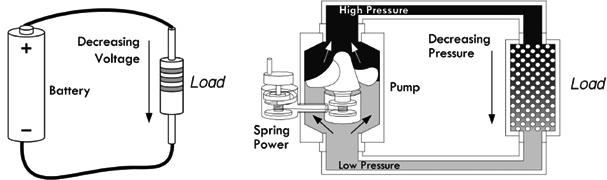
FIGURE 2.11
Here’s another water analogy that relies on gravity to provide the pressure. Though this analogy falls short of being accurate in many regards, it at least demonstrates how a larger voltage (greater water pressure) can result in greater current flow.
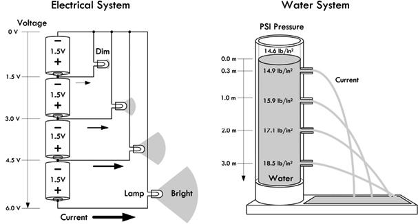
FIGURE 2.12
It’s not wise to focus too much attention on these water analogies—they fall short of being truly analogous to electric circuits. Take them with a grain of salt. The next section will prove how true this is.
Example 1: Find the voltage between the various points indicated in the following figures. For example, the voltage between points A and B in Fig. 2.13a is 12 V.
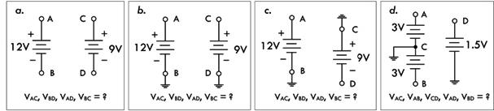
FIGURE 2.13
Answer: a. VAC = 0, VBD = 0, VAD = 0, VBC = 0. b. VAC = 3 V, VBD = 0 V, VAD = 12 V, VBC = 9 V. c. VAC = 12 V, VBD = −9V. VAD = −21V, VBC = 0 V. d. VAC = 3 V, VAB = 6 V, VCD = 1.5 V, VAD = 1.5 V, VBD = 4.5 V.
Example 2: Find the point voltages (referenced to ground) at the various locations indicated in the following figures.
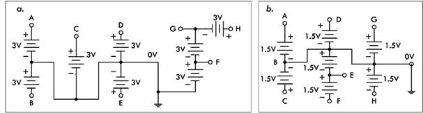
FIGURE 2.14
Answer: a. A = 3 V, B = −3 V, C = 3 V, D = 3 V, E = 3 V, F = 3 V, G = 6 V, H = 9 V. b. A = 1.5 V, B = 0 V, C = 1.5 V, D = 1.5 V, E = −1.5 V, F = −3.0 V, G = 1.5 V, H = −1.5 V.
2.4 A Microscopic View of Conduction (For Those Who Are Interested)
At a microscopic level, a copper conductor resembles a lattice of copper balls packed together in what’s called a face-centered-cubic lattice structure, as shown in Fig. 2.15. For copper, as well as other metals, the bonding mechanism that holds everything together is referred to as metallic bonding, where outermost valence electrons from the metal atoms form a “cloud of free electrons” which fill the space between the metal ions (positively charged atoms missing an electron that became “free”—see the planetary model in Fig. 2.15b). This cloud of free electrons acts as a glue, holding the lattice metal ions together.
FIGURE 2.15 (a) Copper nucleus composed of protons and neutrons held together by nuclear forces that is roughly 137 times stronger than the electromagnetic force. (b) Copper atoms, as viewed by the classic planetary model, consisting of valance electrons held in orbit by electric forces. Quantum mechanics is required to explain why electrons exist in discrete energy levels, and why they don’t fall into the nucleus or radiate electromagnetic energy as they orbit. (c) Copper lattice has a face-centered cubic packing arrangement. (d) Scanning tunneling electron microscope (STM) image of copper 100, courtesy of Institut für Allgemeine Physik, TU Wien. (e) Ball packing model of lattice, showing irregularities in lattice geometry, partly caused by impurities (other kinds of atoms). (f) Lattice view showing that lattice atoms vibrate due to external thermal interactions as well as interactions with free electrons. Free electrons move about randomly, at varying speeds and directions, colliding with other electrons and lattice ions. Under normal conditions, they do not leave the surface of the metal.
Each free electron within the cloud of free electrons moves about in random directions and speeds, colliding and rebounding “off” metal ions and other imperfections (impurities in lattice and grain boundary transitions, etc.). It is important to realize that this is occurring in a chunk of copper, at room temperature, without any applied voltage.
At room temperature, no free electrons ever leave the surface of the metal. A free electron cannot escape the coulomb (electric) attractive forces presented by the positive metal ions in the lattice. (We’ll see later that under special conditions, using unique mechanisms, it is possible for electrons to escape.)
According to what’s called the free-electron model—a classical model that treats free electrons as a gas of noninteracting charges—there is approximately one free electron per copper atom, giving a copper conductor a free electron concentration of ρn = 8.5 × 1028 electrons/m3. This model predicts that, under normal conditions (a piece of copper just sitting there at room temperature), the thermal velocity v of electrons (or root-mean-square speed) within copper is about 120 km/s (1.2 × 105 m/s), but depends on temperature. The average distance an electron travels before it collides with something, called the mean free path λ, is about 0.000003 mm (2.9 × 10−9 m), with the average time between collisions τ of roughly 0.000000000000024 s (2.4 × 10−14 s). The free-electron model is qualitatively correct in many respects, but isn’t as accurate as models based on quantum mechanics. (The speed, path, and time are related by v = λ/τ.)
In quantum mechanics, electrons obey velocity-distribution laws based on quantum physics, and the movement of electrons depends on these quantum ideas. It requires that we treat electrons as though they were waves scattering from the lattice structure of the copper. The quantum view shows the thermal speed (now called Fermi velocity vF) of a free electron to be faster than that predicted by the free-electron model, now around 1.57 × 106 m/s, and contrarily, it is essentially independent of temperature. In addition, the quantum model predicts a larger mean free path, now around 3.9 × 10−8 m, which is independent of temperature. The quantum view happens to be the accepted view, since it gives answers that match more precisely with experimental data. Table 2.1 shows the Fermi velocities of electrons for various metals.
TABLE 2.1 Condensed Matter Properties of Various Metals
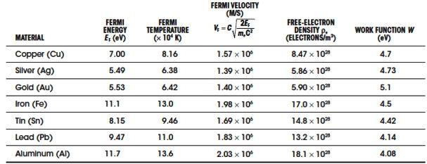
Note: 1 eV = 1.6022 × 10−19 J, me = 9.11 × 10−31 kg, c = 3.0 × 108 m/s
Fermi energy and free electron density data from N.W. Ashcroft and N.D. Mermin, Solid State Physics, Saunders, 1976; work function data from Paul A. Tipler and Ralph A. Llewellyn, Modern Physics, 3rd ed., W.H. Freeman, 1999.
Also, the surface binding energy (caused by electrostatic attraction) that prevents electrons from exiting the surface of the metal, referred to as the work function, is about 4.7 eV for copper (1 eV = 1.6022 × 10−19 J). The only way to eject electrons is through special processes, such as thermionic emission, field emission, secondary emission, and photoelectric emission.
(Thermionic emission: increase in temperature provides free electrons enough energy to overcome work function of the material. The emitted electron is referred to as a thermoelectron. Field emission: additional energy from an electric field generated by a high-voltage conductor provides an attractive enough positive field to free electrons from the surface. This requires huge voltages [MV per cm between emitting surface and positive conductor]. Secondary emission: electrons are emitted from a metallic surface by the bombardment of high-speed electrons or other particles. Photoelectric emission: electron in material absorbs energy from incoming photon of particular frequency, giving it enough energy to overcome work function. A photon must be of the correct frequency, governed by W = hf0, for this to occur [Planck’s constant h = 6.63 × 10−34 J-s or 4.14 × 10−14 eV; f0 is in hertz]).
2.4.1 Applying a Voltage
Next, we wish to see what happens when we apply a voltage across the conductor—say, by attaching a thick copper wire across a battery. When we do this, our randomly moving free electrons all experience a force pointing toward the positive end of the wire due to the electric field set up within the wire. (The field is due to the negative concentration of pumped-in electrons at one end relative to the neutral [positive relative to negative] concentration at the other end.) The actual influence this force has on the motion of the random free electrons is small—the thermal velocity is so large that it is difficult to change the momentum of the electrons. What you get is a slightly parabolic deviation in path, as shown in Fig. 2.16.
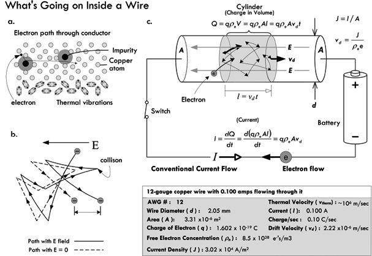
FIGURE 2.16 (a) Simplistic view of an electron randomly moving through a copper lattice, rebounding off lattice atoms and impurities. (b) An electron collides frequently with the ions and impurities in a metal and scatters randomly. In an electric field, the electron picks up a small component of velocity opposite the field. The differences in the paths are exaggerated. The electron’s path in an electric field is slightly parabolic. (c) Model illustrating current density, drift velocity, charge density, thermal velocity, and current.
Normally, the field present in the wire would create a net acceleration component in the direction of the force; however, the constant collisions electrons experience create a drag force, similar to the drag experienced by a parachute. The net effect is an average group velocity referred to as the drift velocity vd. Remarkably, this velocity is surprisingly small. For example, the voltage applied to a 12-gauge copper wire to yield a 0.100-A current will result in a drift velocity of about 0.002 mm per second! The drift velocity is related, determined by
vd = J/(ρee)
where J is the current density—the current flowing through an area (J = I/A), ρe is the free-electron density in the material, and e is the charge of an electron. Table 2.1 shows free-electron densities for various materials. As you can see, the drift velocity varies with current and diameter of the conductor.
The drift velocity is so slow, only fractions of a millimeter per second, that it is worth pondering how a measurable current can even flow. For example, what happens when you flip the switch on a flashlight? Of course, we don’t have to wait hours for electrons to move down the conductors from the battery. When we throw the switch, the electric field of the incoming electron has a repulsive effect on its neighbor within the wire. This neighbor then moves away toward another neighbor, creating a chain of interactions that propagates through the material at near the speed of light. (See Fig. 2.17.) This reaction, however, really isn’t the speed of light, but a fraction less, depending on the medium. The free electrons spreading throughout the conductor all start moving at once in response—those nearest the switch, as well as those nearest the light filament or LED. A similar effect occurs in fluid flow, as when you turn on a garden hose. Because if the hose is already full of water, the outflow starts immediately. The force of the water at the faucet end is quickly transmitted all along the hose, and the water at the open end of the hose flows almost at the moment the faucet is opened.
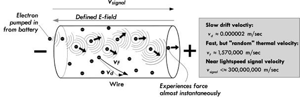
FIGURE 2.17 Illustration of how the electric field propagates down a wire as electrons are pumped into one end.
In the case of alternating current, the field reverses directions in a sinusoidal fashion, causing the drift velocity component of electrons to swish back and forth. If the alternating current has a frequency of 60 Hz, the velocity component would be vibrating back and forth 60 times a second. If our maximum drift velocity during an ac cycle is 0.002 mm/s, we could roughly determine that the distance between maximum swings in the drift distance would be about 0.00045 mm. Of course, this doesn’t mean that electrons are fixed in an oscillatory position. It means only that the drift displacement component of electrons is—if there is such a notion. Recall that an electron’s overall motion is quite random and its actual displacement quite large, due to the thermal effects.
2.5 Resistance, Resistivity, Conductivity
As was explained in the last section, free electrons in a copper wire at room temperature undergo frequent collisions with other electrons, lattice ions, and impurities within the lattice that limit their forward motion. We associate these microscopic mechanisms that impede electron flow with electrical resistance. In 1826, Georg Simon Ohm published experimental results regarding the resistance of different materials, using a qualitative approach that wasn’t concerned with the hidden mechanisms, but rather considered only the net observable effects. He found a linear relationship between how much current flowed through a material when a given voltage was applied across it. He defined the resistance to be the ratio of the applied voltage divided by the resultant current flow, given by:
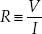
(2.4)
This statement is called Ohm’s law, where R is the resistance, given in volts per ampere or ohms (abbreviated with the Greek symbol omega, Ω). One ohm is the resistance through which a current of 1 A flows when a voltage of 1 V is applied:
1 Ω = 1 V/1 A
The symbol 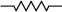 is used to designate a resistor.
Now, Ohm’s law isn’t really a law, but rather an empirical statement about the behavior of materials. In fact, there are some materials for which Ohm’s law actually doesn’t work.
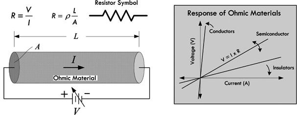
FIGURE 2.18
Ohm’s law can be applied only to ohmic materials—materials whose resistance remains constant over a range of voltages. Nonohmic materials, on the other hand, do not follow this pattern; they do not obey Ohm’s law. For example, a diode is a device that allows current to pass easily when the voltage is positive, but prevents current flow (creates a high resistance) when the voltage is negative.
CURIOUS NOTE ABOUT OHM’S LAW
Usually you see Ohm’s law written in the following form:
V = I × R
However, in this form it is tempting to define voltage in terms of resistance and current. It is important to realize that R is the resistance of an ohmic material and is independent of V in Ohm’s law. In fact, Ohm’s law does not say anything about voltage; rather, it defines resistance in terms of it and cannot be applied to other areas of physics such as static electricity, because there is no current flow. In other words, you don’t define voltage in terms of current and resistance; you define resistance in terms of voltage and current. That’s not to say that you can’t apply Ohm’s law to, say, predict what voltage must exist across a known resistance, given a measured current. In fact, this is done all the time in circuit analysis.
2.5.1 How the Shape of a Conductor Affects Resistance
The resistance of a conducting wire of a given material varies with its shape. Doubling the length of a wire doubles the resistance, allowing half the current to flow, assuming similar applied voltages. Conversely, doubling the cross-sectional area A has the opposite effect—the resistance is cut in half, and twice as much current will flow, again assuming similar applied voltages.
Increasing resistance with length can be explained by the fact that down the wire, there are more lattice ions and imperfections present for which an applied field (electric field instigated by added electrons pumped in by the source) must shove against. This field is less effective at moving electrons because as you go down the line, there are more electrons pushing back—there are more collisions occurring on average.
Decreasing resistance with cross-sectional area can be explained by the fact that a larger-volume conductor (greater cross-sectional area) can support a larger current flow. If you have a thin wire passing 0.100 A and a thick wire passing 0.100 A, the thinner wire must concentrate the 0.100 A through a small volume, while the thick wire can distribute this current over a greater volume. Electrons confined to a smaller volume tend to undergo a greater number of collisions with other electrons, lattice ions, and imperfections than a wire with a larger volume. The concentration of free-electron flow, according to Benjamin Franklin’s convention, represents a concentration of conventional current flow in the opposite direction. This concentration of current flow is called the current density J—the rate of current flows per unit area. For a wire: J = I/A. Figure 2.19 demonstrates how the current density is greater in a thin 12-gauge wire than in a thicker 4-gauge wire. It also shows that the drift velocity in the thick wire is less than the drift velocity in the thin wire—a result of a “decrease in electron field pressure” lowering the average “push” in the current flow direction.
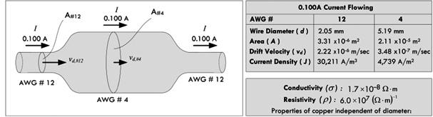
FIGURE 2.19 Effects of wire diameter on resistance. A thinner wire has more resistance per unit length than a thicker wire.
2.5.2 Resistivity and Conductivity
We have left out the most important aspect of resistance that has nothing to do with the physical length or diameter of the material. How does the “chemistry” of the material affect the resistance? For example, if you have a copper wire with the same dimensions as a brass wire, which metal has the greater overall resistance? To answer this question, as well as provide a way to categorize materials, we adopt the concept of resistivity. Unlike resistance, resistivity is entirely independent of the dimensions of the material. Resistivity is a property unique to the material. The resistivity ρ is defined as follows:
(2.5)
where A is the cross-sectional area, L is the length, and R is the overall resistance of the material, as measured across its length. The units of resistivity are ohm-meters (Ωm).
For some, resistivity is too negative a concept—it tells you how “bad” something is at passing current. Optimists prefer the concept of conductivity—how “good” something is at passing current. Conductivity, symbolized σ, is simply the mathematical inverse of resistivity:
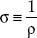
(2.6)
The units of conductivity are siemens, S = (Ωm)−1. (Mathematical note: [Ωm]−1 = 1/[Ωm]). Both conductivity and resistivity contain the same important underlining information. Some prefer to play with equations that use the optimistic notion of conductivity (“glass half full”); others prefer the pessimistic notion of resistivity (“glass half empty”).
In terms of resistivity and conductivity, we can rewrite Ohm’s law as follows:
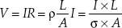
(2.7)
Table 2.2 shows the conductivities (resistivities, for the pessimists) of various materials. (Consult a technical handbook, such as The Handbook of Chemistry and Physics, for a more complete list.) The conductivity of metals, such as copper and silver, is a factor of 1021 higher than that of a good insulator, such as Teflon. Though both copper and silver are great conductors, silver is simply too expensive for practical use. Though aluminum is a fairly good conductor and was actually used at one time in home circuitry, it quickly became apparent that it oxidized badly, inhibiting good electrical contacts and limiting current flow to channels of limited size. The result produced fire hazards.
TABLE 2.2 Conductivity of Various Materials
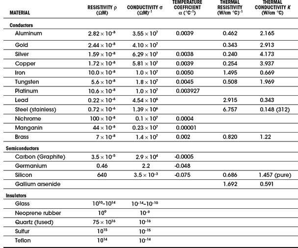
An important feature of resistivity (or conductivity) is its temperature dependency. Generally, within a certain temperature range, the resistivity for a large number of metals obeys the following equation:
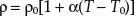
(2.8)
where ρ is the calculated resistivity based on a set reference resistivity ρ0 and temperature T0. Alpha α is called the temperature coefficient of resistivity, given in units of 1/°C or (°C)−1. The resistivity for most metals increases with temperature because lattice atom vibrations caused by thermal energy (increased temperature) impede the drift velocity of conducting electrons.
Are Water, Air, and Vacuums Considered Insulators or Conductors?
These media require special mention. See comments presented in Table 2.3.
TABLE 2.3 Resistivity of Special Materials
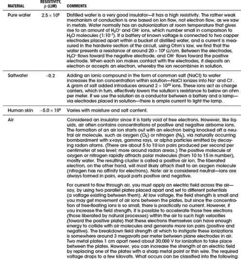
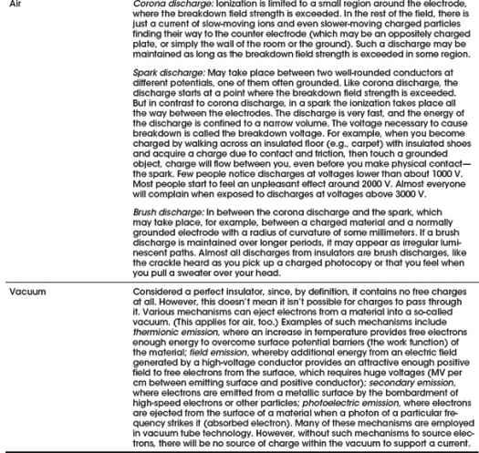
2.6 Insulators, Conductors, and Semiconductors
As we have seen, the electrical resistivities of materials vary greatly between conductors and insulators. A decent conductor has around 10−8 Ωm; a good insulator has around 1014 Ωm; a typical semiconductor from 10−5 to 103 Ωm—depending on temperature. What is the microscopic explanation for these differences?
The answer to this question rests upon the quantum nature of electrons. In classical physics the energy of an electron in a metal can take on any value—it is said the energy values form a continuum. (Here, electron energy is considered zero at infinite distance from the nucleus and becomes more negative in energy closer to the nucleus, relative to the zero reference state. Negative energy infers that there is electric attraction between the positive nucleus and the electron—it is electric potential energy.) However, a quantum description of electrons in metals shows that the energy values of electrons are quantized, taking on discrete values. This comes from the wavelike nature of electrons—analogous to standing waves on strings existing only at discrete frequencies. Figure 2.20 shows an energy diagram illustrating the possible energy levels of an electron (ignoring lattice influences). The diagram illustrates only the possible energy levels—electrons are not necessarily in each level.
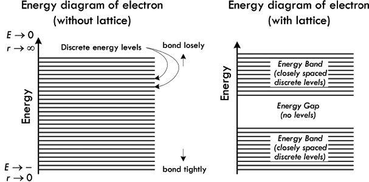
FIGURE 2.20 (Left) Energy diagram showing all possible energy levels of an electron in a solid; but it takes no account of the influence of an atomic crystalline lattice structure. (Right) Energy diagram that shows possible energy levels of an electron within a material made of a regular lattice of atoms. Electron energies are restricted to lie within allowed bands, and there is a large energy gap where no electrons are allowed. Even within the allowed bands, the possible electron energies are closely spaced discrete levels.
When a set of atoms forms a regular background lattice, the possible energy values of the electrons are altered even further. We still have discrete energy regions, called allowed bands, but we now get what are called energy gaps. Energy gaps are forbidden regions to the electron, and represent regions where no traveling wave (electron) can exist when placed in the periodic electric potential of the metal’s positive lattice ions. These gaps are quite large in the scale of atomic physics—within electron-volts range. Again, energy levels presented in the band diagram specify only possible values of electron energies—they may or may not be occupied.
Now, quantum physics has an interesting property, called the Pauli exclusion principle, which has a critical role in determining the properties of materials. The Pauli exclusion principle says that no two electrons in an atom can be in the same quantum state. The lowest common divisor of quantum states is the spin quantum number ms, which states that no more than two electrons with opposing spin (up or down) can be located in the same energy level. Now, if we consider a solid that has many free electrons, which is in an equilibrium state, electrons fill the lowest energy levels available in the allowed band, up to two in each level. Those electrons further down in energy are more tightly bound and are called innermost electrons. When all the electrons are placed in the lowest energy state, we are left with two possible outcomes. In the first case, the highest level to be filled is somewhere in the middle of a band. In the second case, the electrons just fill one or more bands completely. We assume that the material is at low enough temperature to prevent electrons from jumping to higher energy levels due to thermal effects.
Now if we add some energy to the free electrons by applying an electric field (attach a voltage source), for example, the electrons in the lower energy levels cannot accept that energy, because they cannot move into an already filled higher energy level. The only electrons that can accept energy are those that lie in the top levels, and then only if there are nearby empty levels into which they can move. Materials with electrons in only partly filled bands are conductors. When the top layer of their electrons moves freely into the empty energy levels immediately above, there is a current. The electrons that jump from a lower level to a higher level are said to be excited. The valance band is an allowed occupied band. The conduction band is an allowed empty band. The energy-band structure for conductors is shown in Fig. 2.21a and c.
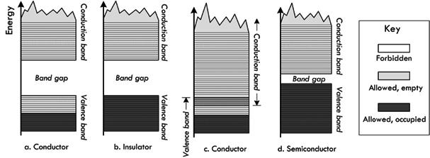
FIGURE 2.21 Four possible band structures for a solid: (a) Conductor—allowed band is only partially full, so electrons can be excited to nearby states. (b) Insulator—forbidden band with large energy gap between the filled band and the next allowed band. (c) Conductor—allowed bands overlap. (d) Semiconductor—energy gap between the filled band and the next allowed band is very small, so some electrons are excited to the conduction band at normal temperatures, leaving holes in the valence band.
If the highest-energy electrons of a material fill a band completely, then a small electric field will not give these electrons enough energy to jump the large energy gap to the bottom of the next (empty) band. We then have an insulator (see Fig. 2.21b). An example of a good insulator is diamond, whose energy gap is 6 eV.
In semiconductors, the highest-energy electrons fill a band (the valance band) at T = 0, as in insulators. However, unlike insulators, semiconductors have a small energy gap between that band and the next, the conduction band. Because the energy gap is so small, a modest electric field (or finite temperature) will allow electrons to jump the gap and thereby conduct electricity. Thus, there is a minimum electric field under the influence of which a material changes from insulator to conductor. Silicon and germanium have energy gaps of 1.1 eV and 0.7 eV, respectively, and are semiconductors. For semiconductors, an increase in temperature will give a fraction of the electrons enough thermal energy to jump the gap. For an ordinary conductor, a rise in temperature increases the resistivity, because the atoms, which are obstacles to electron flow, vibrate more vigorously. A temperature increase in a semiconductor allows more electrons into the empty band and thus lowers the resistivity.
When an electron in the valance band of a semiconductor crosses the energy gap and conducts electricity, it leaves behind what is known as a hole. Other electrons in the valence band near the top of the stack of energy levels can move into this hole, leaving behind their own holes, in which still other electrons can move, and so forth. The hole behaves like a positive charge that conducts electricity on its own as a positive charge carrier. An electron excited from the valence band to the conduction band is thus doubly effective at conducting electricity in semiconductors.
Besides the intrinsic elemental semiconductors, such as silicon and germanium, there are hybrid compounds—compounds such as gallium arsenide. Other semiconductors are made by introducing impurities into a silicon lattice. For example, an atom in the chemical group of phosphorous, arsenic, and antimony can replace one of the silicon atoms in a lattice without affecting the lattice itself too much. However, each of these impurities has one more electron in its valence level than the silicon atom has; this extra electron, for which there is no room in the valence band, takes a place in the conduction band and can conduct electricity. A semiconductor with impurities of this sort is called an n-type semiconductor, and the extra electrons are called donor electrons.
Atoms of elements in the same chemical group as boron, aluminum, and gallium have one less valence electron than silicon has. If an atom is added to a lattice of silicon as an impurity, there is one less electron than is needed to form a bond that holds the lattice together. This electron must be provided by the electrons of the valence band of the lattice material, and holes are created in this band. These holes act as positive charge carriers. The impurity atoms are called acceptors. A semiconductor with such impurities is called a p-type semiconductor.
We will see later on how n-type and p-type semiconductors are used for making one-way gates for current flow (diodes) and voltage-controlled current switches (transistors).
2.7 Heat and Power
In Sec. 2.3, we discovered the generalized power law, which tells us that if we can measure the current entering a device, as well as the voltage across the device, we know the power that is used by the device:
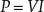
(2.9)
The generalized power law tells us how much power is pumped into a circuit but doesn’t say anything about how this power is used up. Let’s consider a two-lead black box—an unknown circuit that may contain all sorts of devices, such as resistors, lamps, motors, or transistors. If all we can do is measure the current entering the black box and the voltage across it—say, using an ammeter and voltmeter (or singularly, a wattmeter)—we could apply the generalized power law, multiply the measured current and voltage readings together, and find the power pumped into the black box. For example, in Fig. 2.22, we measure 0.1 A entering when a voltage of 10 V is applied, giving us a total consumed power of 1 W.
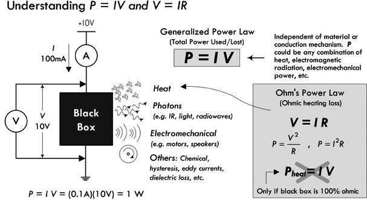
FIGURE 2.22
Knowing how much power is pumped into the black box is incredibly useful—it allows for quick power consumption measurements and often simplifies circuit analysis—as we’ll see later. But let’s say that we are interested in figuring out how much power is lost to heating (energy that goes into lattice vibrations, emissive radiation, etc.). We really can’t say, assuming we aren’t allowed to look inside the black box. There could be devices inside that take some of the initial energy and use it to do useful work, such as generating magnetic fields in the armature (rotor) and stator sections of a motor, causing the stator to rotate; or generating a magnetic field in a voice coil attached to a paper speaker cone that compresses air; or generating light energy, radio waves, and so on. There may be power converted into other weird forms not really coined as heat, such as driving chemical reactions, generating hysteresis effects, or eddy current in transformers.
The only time we can say for certain that power is totally converted into heat energy is if we assume our black box is a perfect resistor (100 percent ohmic in nature). Only then can we substitute Ohm’s law into the generalized power equation:
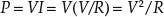
(2.10)
or
P = VI = (IR)I = I2R
In this form, the power lost due to heating is often called Ohmic heating, Joule heating, or I2R loss. Be careful how you interpret this law. For example, let’s consider our black box that drew 1 W of power. Given the power and the current—which we measure—it would be easy to assume that the resistance of the black box is:
Accordingly, we would say the black box is a 100-Ω resistor generating 1 W of heat. As you can see, this is an erroneous assumption, since we have disregarded the internal workings of the black box—we didn’t account for devices that perform useful work. You’ll often see people treat any load (black box) as a resistor when doing circuit analysis and such. This will get you the right answer when solving for a particular variable, but it is an analysis trick and shouldn’t be used to determine how much heat is being generated, unless, of course, the black box is actually a resistor.
The following example provides some insight into where power is being used and how much of it is being converted into heat.
The total power pumped into this circuit gets converted into useful work and heat. The total “pump-in” power is:
Ptot = IV = (0.757 A)(12 V) = 9.08 W
(This is based on an open terminal battery measurement, without the rest of the circuit attached.) From there, we notice that some of the total power is wasted within the internal resistance of the battery, within the internal resistance of the wires, and within the resistance of the current-limiting resistor used by the LED. The power used to create light from the lamp and LED can be considered useful power used. However, since we can’t really separate the heat from the light power for these devices, we must apply the generalized power law to them and be content with that. According to the conservation of energy (or power), all individual powers within the circuit add up to the total power.
FIGURE 2.23
Example: With an ammeter and voltmeter, you measure the current drawn by a computer to be 1.5 A and the voltage entering to be 117 V. How much power does the computer consume? Can we say how much power is lost to heat?
Answer:
P = IV = (1.5 A)(117 V) = 176 W. Knowing how much of the power is lost to heating is practically impossible to measure without taking the computer apart.
Example: Determine the resistance of the following four round rods of material, each 1 m long and 2 mm in diameter: copper, brass, stainless steel, and graphite. Also figure out how much power is lost to heating if a current of 0.2 A flows through each one.
ρcopper = 1.72 × 10−8 Ωm, ρbrass = 7.0 × 10−8 Ωm, ρsteel = 7.2 × 10−7 Ωm, ρgraphite = 3.5 × 10−5 Ωm
Substituting this into the resistance expression, we get:
Rcopper = 5.48 × 10−3 Ω, Rbrass = 2.23 × 10−2 Ω, Rsteel = 2.31 × 10−1 Ω, Rgraphite = 11.1 Ω
The power loss we get by using Eq. 2.10: P = I2R = (0.2 A)2R = (0.04 A2)R:
Pcopper = 2.2 × 10−4 W, Pbrass = 8.9 × 10−4 W, Psteel = 9.2 × 10−3 W, Pgraphite = 0.44 W
2.8 Thermal Heat Conduction and Thermal Resistance
How is the energy transferred in heating? Within a gas, heat transfer represents the transfer of energy between colliding gas molecules. Gas molecules at a hotter temperature move around more quickly—they have a high kinetic energy. When they are introduced into another, colder-temperature gas, the “hotter,” fast-moving molecules impart their energy to the slower-moving molecules. Gases tend to be the worst thermal conductors, due to a low density of molecules.
In nonmetals, heat transfer is a result of the transfer of energy due to lattice vibrations—energetically vibrating atoms in one region of a solid (e.g., the region near a flame) transfer their energy to other regions of a solid that have less energetically vibrating atoms. The transfer of heat can be enhanced by cooperative motion in the form of propagating lattice waves, which in the quantum limit are quantized as phonons. The thermal conductivity of nonmetals varies, depending greatly on the lattice structure.
In terms of metals, heat transfer is a result of both lattice vibration effects (as seen in nonmetals) as well as kinetic energy transfer due to mobile free electrons. Recall that free electrons within a metal are moving quite fast (~106 m/s for most metals) at room temperature. Though quantum mechanics is required, it is possible to treat these electrons like a dense gas, capable of increasing its overall energy as heat is added, and likewise, capable of transporting this energy to regions of the metal that are lower in temperature. Notice, however, that an increase in metal temperature, as a whole, also increases the electrical resistance—the drift velocity component of the free electron goes down, due to both increased lattice vibrations and an increase in thermal velocity component. It becomes harder to influence the free electrons with an applied field. Metals are the best thermal conductors, due in part to the additional free electrons.
The energy an object has at temperature T is correlated to the internal energy—a result of its internal atomic/molecular/electron motions. It is not correct, however, to use the word heat, such as “object possesses heat.” Heat is reserved to describe the process of energy transfer from a high-temperature object to a lower-temperature object. According to the first law of thermodynamics, which is a statement about the conservation of energy, the change in internal energy of a system ΔU is equal to the heat QH added to the system and the work W done by the system: ΔU = QH − W. If we assume that no work is done (energy transferred to, say, move a piston, in the case of a gas), we say ΔU = QH. With this assumption, we can take heat to be not a measure of internal energy of the system, but a change in internal energy. The main reason for this concept is that it is very difficult to determine the actual internal energy of a system; changes in internal energy are more meaningful and measurable.
In practice, what is most useful is the rate of heat transfer—the power loss due to heating. With the help of experimental data, the following formula can be used to determine how well certain materials transfer heat:
(2.11)
Here, k is called the thermal conductivity (measured in W/m °C) of the material in question, and ∇T is the temperature gradient:
Now, the gradient is probably scary to a lot of you—it is simply a way to represent temperature distributions in 3-D, with time. To keep things simple, we will stick to 2-D, and represent the gradient as acting through an area A through a thickness L, and assume steady-state conditions:
(2.12)
where ΔT = Thot − Tcold, measured at points across the length L of the material. The material may be steel, silicon, copper, PC board material, and so on. Figure 2.24 shows a picture of the situation.
When one end of a block of material is placed at a hot temperature, heat will be conducted through the material to the colder end. The rate of heat transfer, or power due to heating, depends on the thermal resistance of the material, which in turn is dependent on the geometry of the material and the material’s thermal resistivity. A weird-looking resistor-like symbol is used here to represent the thermal resistance. Table 2.4 shows the thermal resistivities of various materials.
FIGURE 2.24
TABLE 2.4 Typical Thermal Resistivities (λ) in Units of °C·in/W
Thermal conductivity k, like electrical conductivity, has an inverse—namely, thermal resistivity λ. Again, one tells you “how good” a material is at transferring heat, the other tells you “how bad” it is at doing it. The two are related by k = 1/λ.
If we consider the geometry of the material, we can create a notion of thermal resistance ℜtherm (analogous to electrical resistance), which depends on the cross-sectional area A, the length of the block of material L, and the thermal conductivity k, or resistivity λ:
(2.13)
Thermal resistance has units of °C/W.
Thus, putting everything together, the power transfer of heat across a block of material, from one point at one temperature to another point at a different temperature, can be expressed as:
(2.14)
(k = thermal conductance) (λ = thermal resistivity) (ℜtherm = thermal resistance)
A very useful property of Eq. 2.14 is that it is exactly analogous to Ohm’s law, and therefore the same principles and methods apply to heat flow problems as to circuit problems. For example, the following correspondences hold:
Thermal conductivity k [W/(m °C)] |
Electrical conductivity σ [S/m or (Ωm)−1] |
Thermal resistivity λ [m°C/W] |
Electrical resistivity ρ [Ωm] |
Thermal resistance ℜtherm [°C/W] |
Electrical resistance R [Ω] |
Thermal current (heat flow) Pheat [W] |
Electrical current I [A] |
Thermal potential difference ΔT [°C] |
Electrical potential difference or voltage V [V] |
Heat source |
Current source |
Example: Calculate the temperature of a 4-in (0.1 m) piece of #12 copper wire at the end that is being heated by a 25-W (input power) soldering iron, and whose other end is clamped to a large metal vise (assume an infinite heat sink), if the ambient temperature is 25°C (77°F).
Answer: First, calculate the thermal resistance of the copper wire (diameter #12 wire is 2.053 mm, cross-sectional area is 3.31 × 10−6 m2):
Then, rearranging the heat flow equation and making a realistic assumption that only around 10 W of heat actually is transferred to the wire from the 25-watt iron, we get:
ΔT = Pheatℜtherm = (10 W)(77.4°C/W) = 774°C
So the wire temperature at the hot end is estimated at:
25°C + ΔT = 799°C (or 1470°F)